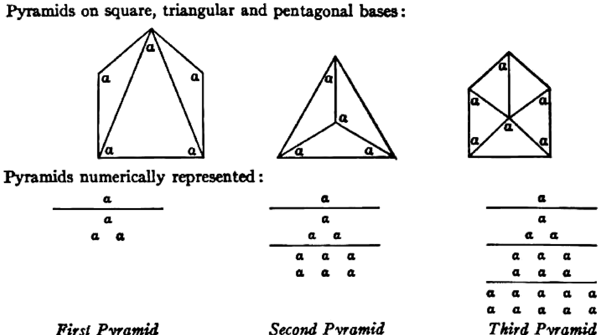

Chapter 13: Solid Pyramidal Numbers on Polygonal Bases¶
1. From here it is already easy to perceive what a solid number is and how such a number advances with equal sides. For any number that, beyond the two dimensions observed in plane diagramming—length and breadth—has taken on a third dimension, which some call depth, others thickness, and still others height, is a solid number, extended in three directions and possessing length, depth, and breadth within itself.
2. This solid form makes its earliest appearance in the figures called pyramids. These rise from broader bases and taper off to a sharp summit: first by triangulation from a triangular base, second by squaring from a square base, next from a pentagonal base, and thereafter in due order from hexagonal, heptagonal, octagonal bases, and so on without limit.
f. 0265 · p. 2493. Just as in geometric solid figures, if from an equilateral triangle you conceive three straight lines extending from its angles, equal in length to the sides of the triangle and slanting upward to converge at one and the same point, a pyramid is formed enclosed by four equilateral triangles equal to one another—the original base triangle together with the three bounded by those three straight lines. And again, from a plane square, if you posit four straight lines equal one by one to the sides of the square, likewise slanting upward to converge at a single point, a pyramid is formed tapering squarely from its square base, bounded by four equilateral triangles and the one original square. So too from a pentagon, a hexagon, a heptagon, and as far as anyone wishes to go: straight lines equal in number to the angles, rising from those angles and meeting at one point, crown a pyramid named after its pentagonal, hexagonal, heptagonal, or corresponding base.
4. In the very same way among numbers: starting from unity as from a point, every linear number grew—such as 1, 2, 3, 4, 5, and the rest to infinity; and from these linear, one-dimensional numbers combined in a definite manner rather than at random, the plane polygonal numbers are fashioned—triangles when the gnomons are added without skipping any term, squares when skipping one, pentagons when skipping two, and always so.
f. 0266 · p. 250

In the exact same fashion, when these plane polygonal numbers themselves are stacked one upon another and built up in layers, the pyramids akin to each kind are born: that on a triangular base from the triangles themselves, that on a square base from the squares, that on a pentagonal base from the pentagons, that on a hexagonal base from the hexagons, and thus through the whole series.
5. Accordingly, the orderly pyramids on a triangular base are these: 1, 4, 10, 20, 35, 56, 84, and so forth; their generation comes from heaping the triangles upon one another—first 1, then 1 + 3, then 1 + 3 + 6, then adding 10, then 15 with the preceding, then 21 upon these, then 28, and onward without end. Clearly the greatest number is thought of as lowest, since it serves as the base; the one immediately smaller sits above it, and the next above that, until unity stands at the summit and tapers the pyramid’s completion, as it were, into a single point.